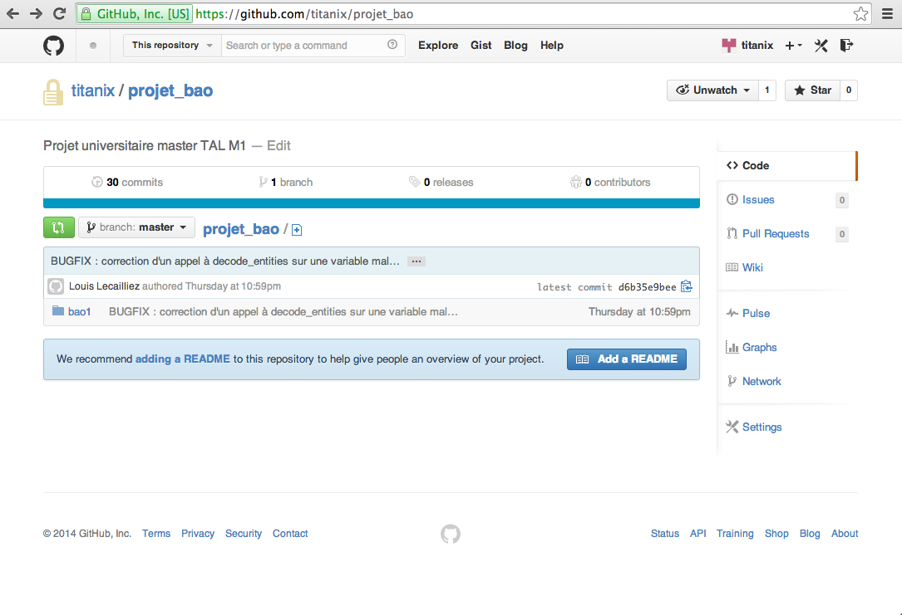
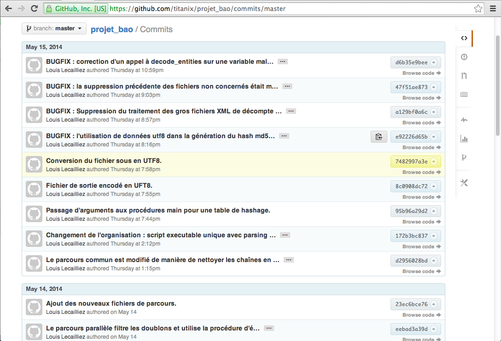

Intégration à GitHub
Configuration
Pour utiliser GitHub, il faut que l'adresse email enregistrée dans la configuration de git
soit la même que l'adresse principale utilisée sur GitHub.
Ce n'était pas mon cas, j'ai donc dû changer ma configuration pour l'adapter.
Git peut être configuré à un niveau global (utilisé par tout les projets de l'utilisateur) ou au niveau d'un répertoire local. Les paramètres locaux ont préséance sur les globaux.
Pour ma part, j'ai choisi de changer les paramètres globaux, pour ne pas avoir à refaire l'opération dans le futur, d'autant plus que l'adresse mail précédemment renseignée n'était plus valide.
# ajout du paramètre global name qui contient mon nom git config --global user.name "Louis Lecailliez" # modification de l'adresse email (caviardée) git config --global user.email "louis....@.....fr" # affichage des paramètres globaux git config --global -l # dans le répertoire du projet, liste tous les paramètres de configuration utilisés git config -l
Remote
La seconde étape est d'ajouter le répertoire fourni par GitHub dans le dépôt distant.
Il est identifié par une URL, et il est fort heureusement
possible de lui adjoindre un alias.
J'ai choisi de l'appeler githubrep pour savoir de quoi il s'agit, même si dans la
documentation on retrouve souvent le nom origin.
# ajout du dépôt distant sous le nom githubrep git remote add githubrep https://github.com/titanix/projet_bao.git # liste les dépôts enregistrés sous leur forme courte git remote
On peut également obtenir les URL complètes de la manière suivante :
git remote -v
githubrep https://github.com/titanix/projet_bao.git (fetch) githubrep https://github.com/titanix/projet_bao.git (push)
Push
C'est l'heure de pousser le code local vers le dépôt GibHub !
C'est d'une simplicité redoutable, puisqu'une seule ligne de commande suffit.
git push githubrep master
On me demande mon nom d'utilisateur (l'adresse email principale du compte GH, qui a été
fixée dans la première partie de ce document) puis le mot de passe associé.
Après un court instant, les fichiers sont maintenant sur le serveur, avec l'historique
complet de commit réalisé sur la branche master jusque là.
Effets du push
La branche master se retrouve sur l'interface web.
Et tous les commits déjà effectués en local sont listés et peuvent être parcourus.
Les différences entre les fichiers sont affichées de manière super user-friendly.
Parmi eux, du code que Diane m'a fourni par support physique, qui a été retravaillé par mes soins puis intégré au reste de la base de code et finalement mis en ligne.
Git clone
Une fois le code en ligne sur la plateforme, il est possible de récupérer le code sur d'autres machines. Dans mon cas, j'ai testé dans une machine virtuelle faisant fonctionne OS X Mavericks.
La première fois, on utilise la commande clone, qui crée une copie locale, les fois suivantes la commande fetch.
git clone https://github.com/titanix/projet_bao.git
Cloning into 'projet_bao'... Username for 'https://github.com': louis....@....fr Password for 'https://louis....@....fr@github.com': remote: Counting objects: 140, done. remote: Compressing objects: 100% (45/45), done. remote: Total 140 (delta 65), reused 140 (delta 65) Receiving objects: 100% (140/140), 24.51 KiB | 0 bytes/s, done. Resolving deltas: 100% (65/65), done. Checking connectivity... done.
Comme il s'agit d'un répertoire privé, on me demande mes identifiants GitHub.